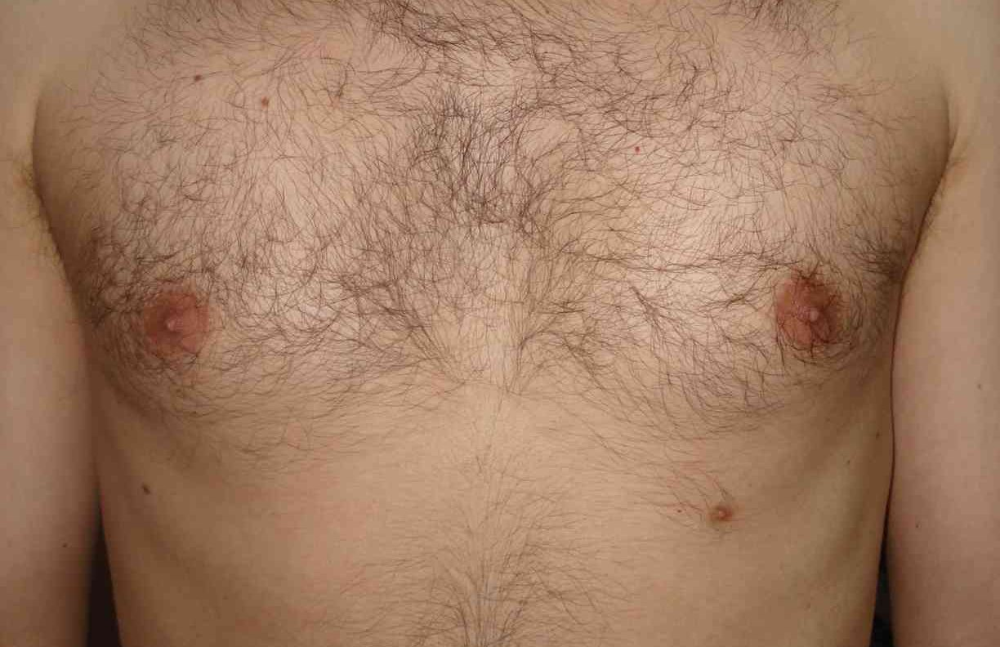

Mas nem todos. Aparentemente, apenas os femininos incomodam. Todas as imagens abaixo foram banidas de diferentes redes sociais. Algumas renderam suspensões da conta da usuária.


Estas imagens não foram banidas de nenhum rede social.

Você pode achar que essa é uma questão menor, mas faz parte de um universo de tabus a que o corpo feminino é submetido.
O tabu promove a vergonha e o desconhecimento.
Muitas mulheres não sabem reconhecer sinais que alertam: pode haver algo errado com sua mama. Tópicos: Vermelhidão, pele endurecida, áreas estufadas, feridas que não cicatrizam, coceira que não passa, saída de líquido pelo mamilo, caroço sob a pele.
Tabus jogam para segundo plano o que é realmente um problema.
4 em cada 10 brasileiras acima dos 50 anos não fazem mamografia. As que mais fazem o exame são as mulheres brancas com superior completo. As que menos fazem, é claro, são as negras com fundamental incompleto. *Fonte: Pesquisa Nacional de Saúde/IBGE (2015)


Muitas mulheres não fazem o exame por medo.
A distribuição de mamógrafos no Brasil é outro entrave. Temos o número suficiente de aparelhos, mas eles se concentram em capitais e grandes cidades. Mais de 50% das cerca de 5 mil cidades com até 50 mil habitantes não têm um aparelho. *Fonte: SBM (Sociedade Brasileira de Mastologia)
A idade e periodicidade são temas controversos. Para mulheres sem histórico familiar ou mutação gênica conhecida, a OMS e o Ministério da Saúde recomendam mamografia a cada 2 anos para mulheres acima de 50 anos, enquanto a maioria das associações médicas indica o exame anual a partir dos 40 anos. Para as que apresentam fatores de risco, recomenda-se a consulta com mastologista para obter a orientação adequada.
O tabu sobre o corpo feminino, a falta de informação sobre exames e a má distribuição de mamógrafos no país, sim, são problemas reais que merecem ser debatidos.
Isto não é um problema. O câncer de mama, é